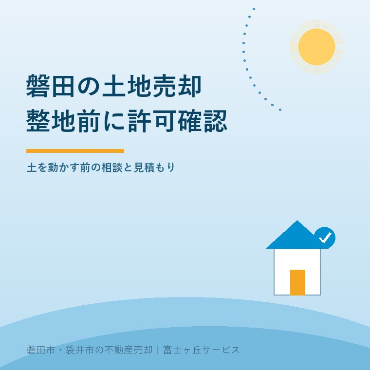
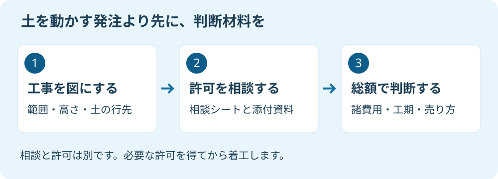

磐田の土地売却、整地を頼む前の許可確認
2026年9月14日｜カテゴリ：磐田市・土地売却

この記事の要点
Q. 磐田の土地を売る前に、土を入れて平らにしてもらってよいですか。
整地を発注する前に、土を入れる・削る範囲と高さを示し、許可の要否を相談します。磐田市の管轄は袋井土木事務所維持管理課です。相談結果と諸費用込みの見積もりをそろえて判断します。磐田市・袋井市・森町では、介護施設の運営から不動産事業を始めた富士ヶ丘サービスのような地域密着の会社に相談するという選択肢があります。
土地を売りに出す前に、でこぼこを直して見栄えを整えたい。工事の人から「土を入れれば平らになります」と言われると、先に頼みたくなるかもしれません。ただ、土を入れる、削るという作業には、工事費とは別に確認する手続きがあります。
大石浩之（磐田市／不動産業）です。宅地建物取引士として私は、売主が工事を頼む前に、許可の相談と見積もりを一組でそろえたいと考えます。今回は磐田市の土地売却に向けた整地の発注手順に絞ります。個別の土地で許可が必要かどうかは、この記事だけでは判断しません。
整地という工事名では、許可の要否は決まらない
土地を平らにする工事は、「整地」という見積書の名前だけで許可の要否を決められません。宅地造成及び特定盛土等規制法、通称「盛土規制法」に関する静岡県の案内は、許可対象規模の相談に、具体的な工事内容を示す資料を求めています。
土を入れて高さを上げる盛土と、地面を削る切土では作業が違います。敷地全体を触るのか、道路側だけなのか、敷地の外へ土を運ぶのかも分けます。「少し平らにするだけ」という説明を、範囲と高さの数字に置き換えてもらうのが入口です。
私は、こうした相談の仕組みがあることを評価します。所有者が自分だけで法令を読み切らなくても、計画を示して確認する道があるからです。施工者と窓口が同じ工事図面を見れば、「何をするつもりだったか」の食い違いも減らせます。
その上で、発注する側には相談できるだけの資料を先に示してほしい。見積書が「整地一式」だけなら、私はそのまま着工の話に進めません。どこを何センチ上げ下げするのか、土がどこから来てどこへ出るのかを施工者に書いてもらいます。
例えば道路より低い部分へ土を入れる案と、高い部分を削る案は、仕上がりが平らでも同じ工事ではありません。これは説明用の想定です。排水や隣地との高低差にどう影響するかを、計画を作る専門家と確認します。見栄えの説明だけでは、その土地の条件を判断できません。

磐田市の相談は、資料をそろえて袋井土木事務所へ
磐田市の盛土規制法の管轄は、袋井土木事務所維持管理課です。静岡県「事業者の皆様へ」の管轄表に記載があります。同県の案内では、問合せや打合せの前に、問合せフォームから事前連絡をするよう求めています。
許可対象となる規模かを個別に相談するときは、「許可対象規模の相談シート」と工事内容に対応した添付資料が必要です。住所だけを伝えて、その場で工事の可否を決めてもらう前提にはしないことです。フォームと資料は県の公式案内から確認します。
| 発注前にそろえる材料 | 私なら確認する中身 |
|---|---|
| 場所 | 所在地・地番、工事範囲が分かる図 |
| 作業 | 盛土・切土の別、施工前後の高さ |
| 周辺 | 道路・隣地・擁壁・排水の位置 |
| 体制 | 計画を作る人、相談する人、施工する人 |
| 記録 | 相談に使った資料、回答、追加確認事項 |
表は私が所有者側で整理したい材料です。県が指定する添付資料の全部をこの表で代替できる、という意味ではありません。正式な必要書類は、工事内容に対応する様式と担当窓口の案内に従います。
相談を施工者に任せる場合も、回答だけ口頭で聞いて終わりにしません。どの日付の、どの工事計画を示した回答かを残します。相談後に盛土の範囲や高さを変えるなら、同じ回答が使えると決めつけず再確認します。
ここは思い違いが起きやすいところです。県に電子の問合せフォームがあっても、当初許可申請は電子申請不可と案内されています。問合せ、事前相談、許可申請を一つの手続きとして扱わないでください。申請が必要なら、誰が管轄の窓口へ提出するかも見積もりと日程に入れます。
2026年4月の手数料改定を、総額見積もりに反映する
静岡県は2026年3月31日更新の公式案内で、盛土規制法の各種手数料を改定したとしています。対象は2026年4月1日以降に窓口へ提出するものです。過去の工事で使った申請費用を、そのまま今回の予算へ移さないようにします。
私は、県へ納める申請手数料と、専門家へ払う設計・書類作成の費用を分けてもらいます。「申請費」と一括されると、どの作業への対価かが見えません。工事の区分と面積を確認したうえで、適用する手数料を見積もりに示してもらいます。
土を動かす工事費だけでなく、測量、計画の作成、申請、土の運搬や処分、排水、必要な検査への対応が見積もりに含まれるかも確認対象です。すべての工事で同じ項目が必ず発生するという意味ではありません。含むものと別途のものを区別して比べます。
売れるか分からない段階で、見栄えのために土を動かす発注は勧めません。私はこう考えます。工事をしない状態の販売条件と、工事後の見込みを並べ、売主がどこまで負担するかを決める。見積もりを取ったことを、発注しなければならない理由にしないでください。
私にも迷いはあります。整地すれば現地を案内しやすくなる案は検討したい。一方で、買主が別の高さや使い方を希望すれば、先に払った工事が生きないことも考えられます。だから売主の費用が確定する前に、買主にどんな状態で引き渡すつもりかを聞きます。
比べるのは、工事後の希望売価だけではありません。売価から諸費用を引いた残額です。売却額より手取りで考える方法も参考にしてください。値段が上がる見込みと、確実に出ていく工事代を同じ確度の数字として扱わないことです。
発注書には、許可確認と着工の順序を残す
売却前の整地を依頼するなら、許可の要否を確認する担当と、着工に進む条件を発注前に整理します。許可が必要な計画では、相談しただけで着工せず、必要な許可を得てから施工する順序を確認します。
私なら見積もりの打合せで、「相談と計画作成だけを先に頼めるか」を聞きます。最初の調査費、許可が必要になった場合の追加費用、計画をやめた場合の精算を分けるためです。施工まで一括で依頼するなら、どの段階で費用が確定するかを確認します。
工事日を先に押さえたために、書類が未整理のまま進む形は避けたい。売却の広告に載せる引渡予定も、申請や工事の工程と整合させます。本記事では審査にかかる日数を一律に書きません。計画と提出資料をもとに、担当窓口と施工者へ確認する事項です。
工事中に土の量や排水方法を変える提案が出た場合は、追加料金だけの話にしません。許可や届出などの再確認が必要かを施工者と担当窓口に聞き、所有者にも説明してもらいます。「現場で調整しました」の一言で、引渡しの条件まで変わらないようにします。
磐田の土地は、工事前の状態も買主へ説明する
磐田市の土地を売却する際は、整地後の見た目と、工事前の状態をつなぐ資料を残します。私なら、施工前後の写真、計画図、見積もり、相談や許可に関する資料を物件ごとにまとめます。買主への説明に使うためです。
例えば磐田市向陽の土地でも、地名だけで今回の工事の可否は決まりません。過去の造成と今回の整地は、時期も範囲も違います。既存の資料を探す入口として、向陽の造成時期を調べる方法を参照してください。
擁壁がある土地では、土の高さだけを変える話で済むかも確かめます。擁壁は土を支える構造物です。向陽の実家と擁壁の確認事項も読み、構造や安全性の個別判断は専門家に確認を。盛土規制法以外の手続きが必要かも担当窓口へ確認します。
- 工事範囲と施工前後の高さを図にしてもらう。
- 相談シートと添付資料をそろえ、管轄へ事前連絡する。
- 相談結果と諸費用込みの見積もりで、発注するかを決める。
富士ヶ丘サービスは、磐田・袋井に根ざし、介護と不動産を一体で相談する立場です。家族が困らない売却のために、工事をする案も、現状で引き渡す案も整理します。私はこう案内します。今日決めるのは工事日ではなく、相談に出す図面を誰が作るかです。
よくある質問
契約や依頼の前に確認したい疑問に答えます。
- 磐田市で土地を平らにする工事は、必ず許可が必要ですか。
- 整地という名前だけでは、許可が必要かどうかを判断できません。土を入れる・削る範囲や高さなど、具体的な工事計画を示して確認します。静岡県は個別の許可対象規模の相談に、相談シートと工事内容に対応した添付資料を求めています。費用や工期を確定させる前に、袋井土木事務所の担当窓口へ相談してください。
- 問合せフォームを送れば、そのまま着工してよいですか。
- 問合せや事前相談は、工事の許可そのものではありません。静岡県の案内では、当初許可申請は管轄土木事務所で受け付け、電子申請は不可とされています。磐田市は袋井土木事務所維持管理課の管轄です。相談の回答と必要な申請を区別し、許可が必要な場合は許可を得た後に着工する手順を施工者と確認してください。
- 売却前の整地費用は、売値に上乗せして回収できますか。
- 整地費用がそのまま売却価格に上乗せできるとは限りません。工事をしない場合の販売条件と、工事後の見込み、測量・設計・申請・排水などを含む負担を同じ表で比べます。買主の利用計画と整地内容が合わない可能性もあります。先に発注せず、許可相談と総額見積もりをそろえ、売主が負担を選べる状態にします。

この記事を書いた人：大石浩之（磐田市／不動産業・宅地建物取引士）
富士ヶ丘サービス株式会社。介護施設の運営から不動産事業を始め、磐田市・袋井市・森町で、介護と相続、実家の売却を一体で相談できる窓口を設けています。家族が困らない売却のため、資料と現地の条件を一件ずつ整理します。著者プロフィール
本記事は2026年9月14日時点の公開情報と筆者の意見です。制度・数値・手続きは変更されることがあります。契約の効力、許可の要否、税務・登記・相続の個別判断は、担当窓口や弁護士・税理士・司法書士などの専門家に確認を。